Overview
Sonic Stitches is an interactive tablecloth that transforms collaborative embroidery into a tangible storytelling medium. Community members sew patterns into a shared cloth while recording personal narratives about food and home. Later, dinner guests touch the stitched patterns to hear those stories — bridging past and present at the same table.
Concept & Motivation
How do we feel the presence of someone who isn't there? TeleAbsence — the felt absence of a distant loved one — is a deeply human experience. We wanted to explore how tangible artifacts could carry traces of a person's presence: their voice, their touch, their stories — so that others could encounter them later, across time and distance. Specifically, we believe the sense of touch is critical for humans to feel connected, so we aim to use tactile sensations as a way to evoke that presence.
We ground this in the ritual of shared meals. Food evokes powerful memories of home, identity, and belonging. We ask participants "What foods remind you of home?" — a question that reliably surfaces intimate, sensory-rich stories. The dinner table became our site of encounter: a place where past voices could rejoin the present.
The medium we choose is collaborative embroidery. Textile craft practices are inherently slow — requiring makers to sit together for hours. That slowness creates a natural space for reflection and storytelling. By recording narratives during the act of sewing and embedding them into the stitchwork itself, the tablecloth becomes both the artifact and the archive.
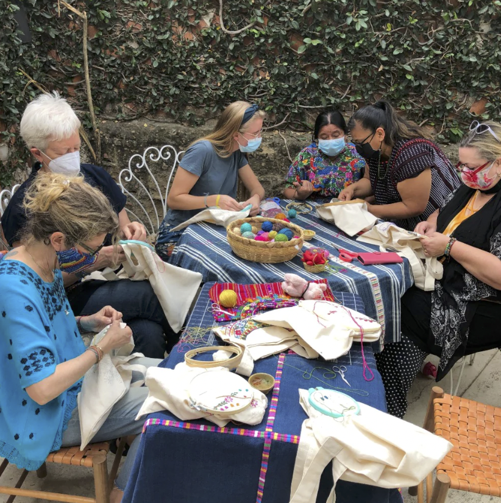
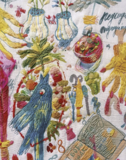
Left: Collaborative textile traditions that inspired our approach.
Right: Narrative embroidery as a storytelling medium.
Artistic Approach
The physicality of embroidery offers specific important affordances:
- The practice is slow and collaborative — you build a mindful connection to the tablecloth artifact
- When touching hand-sewn embroidery, you can feel the journey of the craft maker in every stitch
- By playing stories while you interact with stitchwork, the artifact and voice become entangled — the maker's presence is embedded in the cloth
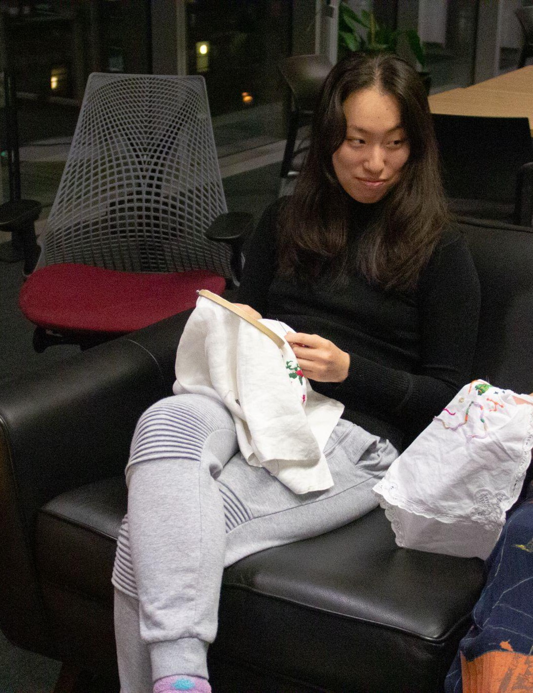
Communities are invited to sew their own patterns into the tablecloth. As they sit and stitch, they reflect on a meaningful question — "What food reminds you most of home?" Their spoken responses are recorded and mapped to their specific stitchwork.
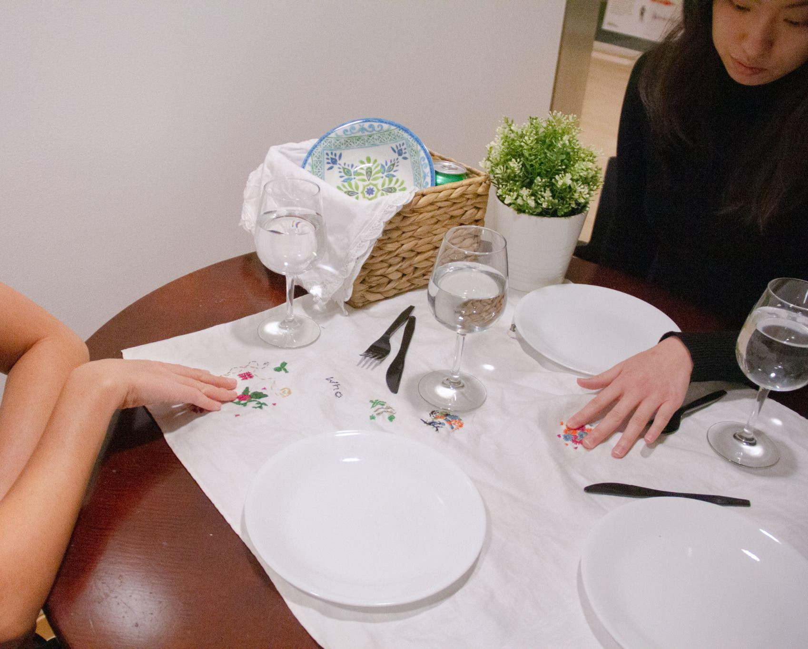
Guests sit for dinner on the Sonic Stitches tablecloth. Running their hands along the hand-stitched patterns plays audio snippets from the person who sewed that portion — past and present voices share the same table.
Research & Materials
We experimented with various forms of conductive textiles and sensing methods as points of entry for our project's core question.
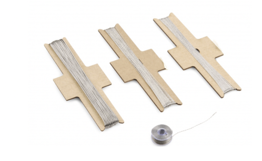
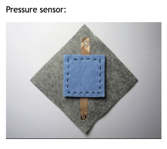
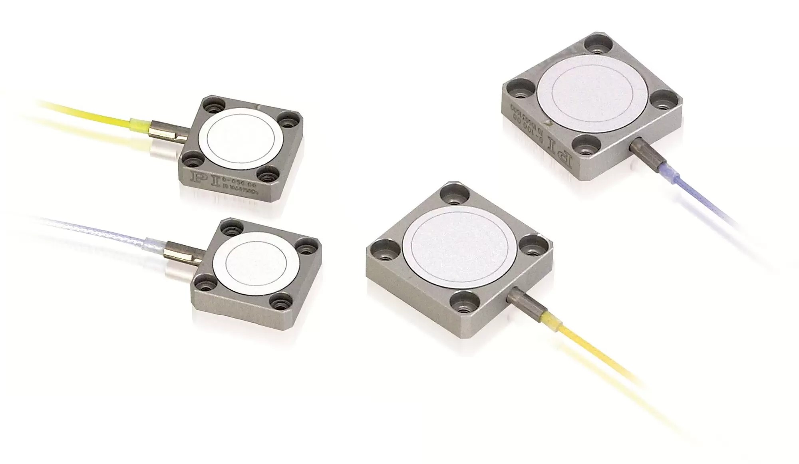
Design Scenarios
We explored three modes of interaction that the system could support:
A user traces their finger along the fabric to explore audio stories woven into a tapestry — a glimpse of dinnertime conversations from the past. The fabric becomes a beyond-the-present portal.
Collocated sharing where conversations of the past interleave with those physically present — a family reunion at the dinner table where absent voices join in.
A knitted object is directly associated with its audio story. Computation disappears into everyday objects — a scarf, a placemat, a quilt square.
Prototyping
We built the system iteratively — starting with material explorations and moving through circuit design to a fully integrated tablecloth prototype.
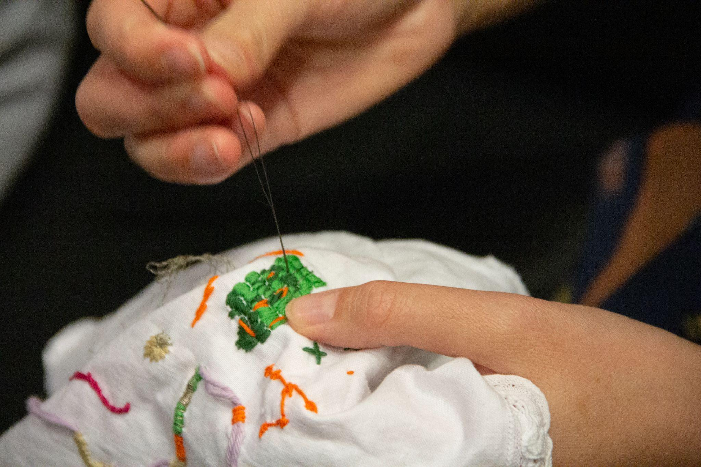
Sewed conductive thread into specific embroidery zones on the tablecloth. Each thread path acts as a capacitive sensor pad — when a finger touches the stitches, the change in capacitance is detected by the circuit.
Integrated textile pressure sensors beneath the embroidered sections. Calibrated sensitivity thresholds so touches and presses trigger audio behaviors.
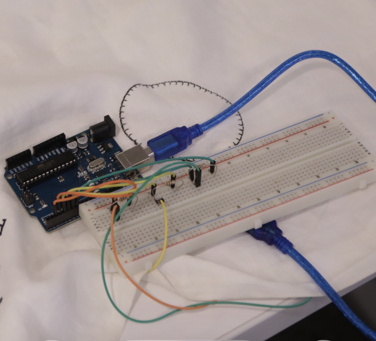
Arduino reads analog sensor values via serial and sends them to a Processing sketch. Wrote firmware to debounce touch signals and map multiple zones simultaneously.
Processing maps each touch zone to a recorded oral narrative. When a guest touches a stitched pattern, the corresponding maker's story plays through speakers beneath the table.
Technical Architecture
The system uses a three-stage pipeline from physical touch to audio playback:
My Contribution
I was responsible for the entire technical architecture, from sensor integration to embedded programming — writing the Arduino firmware that reads capacitive touch values from conductive thread zones, calibrating sensor thresholds, and building the serial communication bridge to Processing. I also led the interaction design, defining how touch gestures would map to different audio playback behaviors based on different embroidery.
Final Result
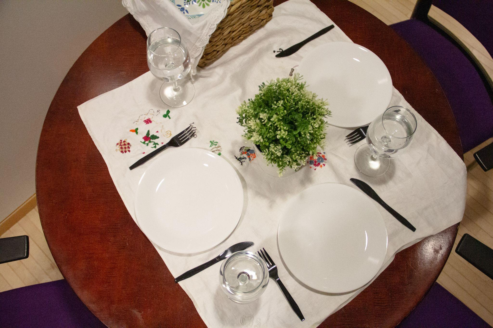
Left: The final Sonic Stitches tablecloth set for dinner, with embroidered patterns visible between place settings.
Right: A guest touching the stitched patterns to trigger audio narratives.
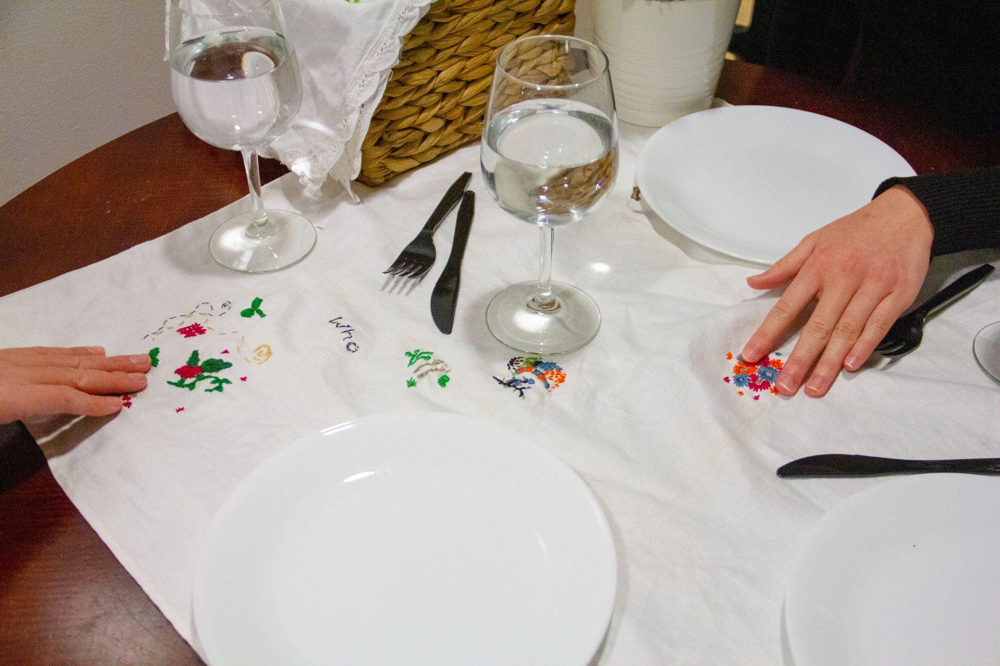
Close-up showing the hand-stitched patterns that serve as touch-sensitive interaction zones.
Demo
Outcome & Reflection
Sonic Stitches was to demonstrate how computation can disappear into handcrafted objects, creating intimate connections between makers separated by time and space.
This project deepened our understanding of how tangible interfaces can mediate human connection in ways that screens cannot. The slow, embodied act of sewing creates a fundamentally different relationship to a digital artifact than typing or tapping — and that difference matters for storytelling.
Future Directions
- Deploy product across more communities to gather further user feedback
- Improve hardware integration — embedding the Arduino and wiring seamlessly within the tablecloth to achieve a more ubiquitous computing experience
- Explore narratives that "cross" — playing on the interwoven nature of the piece where touching intersecting threads blends multiple stories